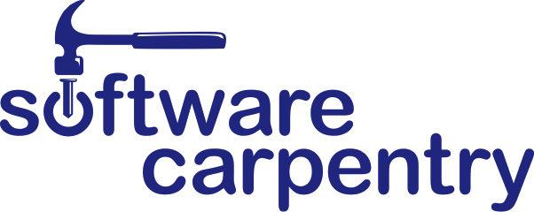

Software Carpentry:
Lessons Learned
Greg Wilson
Lab skills for scientific computing
Why We Exist
 |
 |
|
| HPC, cloud, Semantic Web | the other 95% of scientists |

If you build a man a fire, you'll keep him warm for a night. If you set a man on fire, you'll keep him warm for the rest of his life.
— Terry Pratchett
What Winning Looks Like
| Number of Reviewers | 2 | 3 | 4 | 5 | |
| Fraction of Papers | 10% | 40% | 40% | 10% | |
| P(at least one reviewer is a believer) | 50% | ||||
| P(single reviewer is a believer) | 18.3% | ||||
We only have to change the minds of 1 scientist in 5
In practice, probably fewer
What We Teach
Unix shell
Git / GitHub
Python (or R)
SQL
=>
=>
=>
=>
task automation
tracking and sharing
modularization
structured data
How We're Doing
Since January 2012:
220 two-day workshops
234 instructors (185 certified)
7700 learners
Where We've Been
Where We Are
Lesson #1:
Most scientists think of programming
as a tax they have to pay
in order to do science.
Lesson #2:
They don't care about reproducibility
Five million papers published 1990–2000.
100 retracted because of computational irreproducibility.
So odds of retraction = 1 in 50,000.
Average paper takes eight months to produce.
Scientists work six-day weeks.
Only worth 115 extra seconds per paper on reproducibility.
Lesson #3:
They care a lot about productivity
We save researchers a day a week
for the rest of their careers.
Lesson #4:
The curriculum is full.
Lesson #5:
It's all in the details.
Two days
Charge a fee
Live coding
Sticky notes
Come with friends
Peer instructors
Lesson #6:
Incentives, incentives, incentives
Save the world
Make new friends
Self-defense
Learn this stuff themselves
Boost their careers
Lesson #7:
Nobody knows anything.
We don't know how to measure programmers' productivity
We don't know how to measure scientists' productivity
The unknowns don't cancel out
But all that's in the paper:
f1000research.com/articles/3-62/v1
So let's talk about what else I've learned
Lesson #8:
We know a lot about how people learn
and how to teach them.

What do we know?
Subgoals improve performance
Practice works best for facts,
worked examples for skills
Peer instruction beats lecture
Media-first increases retention
http://computinged.wordpress.com/
Lesson #9:
Most people would rather fail than change.
I.e., they'd rather ignore what we know than change what they do.
Most scientists treat teaching
like politicians treat climate change.
*blush*

Stefik & Siebert:
“An Empirical Investigation into
Programming Language Syntax.”
ACM Trans. Computing Education,
2013(11). http://tinyurl.com/nwit-syntax
We're about to re-do this
for Python, MATLAB, R, and Julia
We could use your help...
So how are we doing?
"We save researchers a day a week
for the rest of their careers."
Anecdotal
Subject to sampling bias
We change what people do,
so are quantitative measures meaningful?
Need answers for funders
More importantly, to tune our teaching
"Half of what we teach is useless:
we just don't know which half."
Speaking of changing what people do...
Cloud computing isn't the revolution
Neither is open access
The real change is massive collaboration
Have you ever:
| edited a Wikipedia page | ✔ | |
| submitted a patch to an open source project | ✔ | |
| submitted a patch to someone else's lessons | ✖ |
Why isn't this normal for lessons??
If the reasons I've thought of are true,
Wikipedia, open source, and textbooks
shouldn't exist
We're making some progress on this
(see https://github.com/swcarpentry/bc/)
Making it work will be
Software Carpentry's greatest contribution